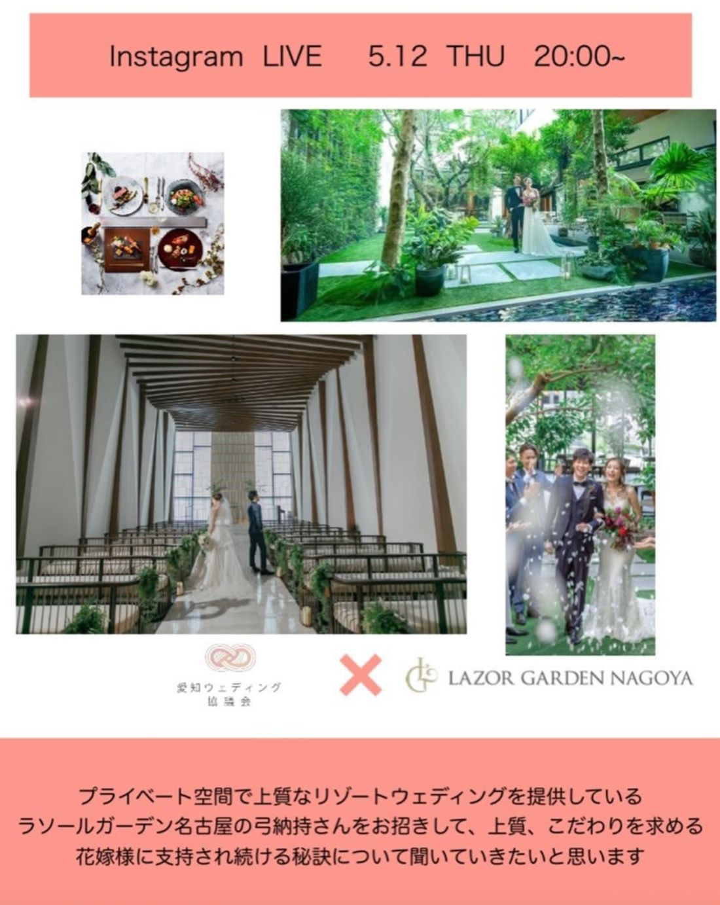

5月のインスタライブのお知らせです。

プライベート空間で、上質なリゾートウェディングを提供しているラソールガーデン名古屋。今回は、同会場の弓納持さんをお招きします。上質、そしてこだわりを求める花嫁様に支持され続ける秘訣について、お伺いしたいと思います。
「良い会場」であることと、「支持され続ける会場」であることは、実は別のことです。一度きりの満足ではなく、選ばれ続けるためには、何を大切にし、どう磨き続けているのか。その裏側にある考え方こそ、立場を問わず学びになるはずです。
上質さは、どうやって生まれ、どうやって保たれているのか。日々のこだわりの積み重ねを、じっくり伺います。
今回、聞き手を務めるのは、次世代推進部部長のタケウチミサトです。1月のインスタライブにゲストとしてご登場いただいたタケウチさんですが、今回はインタビュアーとして参加します。若い世代の視点から、弓納持さんの言葉を引き出していきます。
「愛知ウェディング協議会」で検索、またはInstagramアカウント【aichi_wedding.council】をご覧ください。アカウントをフォローいただくと、ライブ開始時に通知が届きます。ご質問は、DMやコメントで事前にもお寄せいただけます。